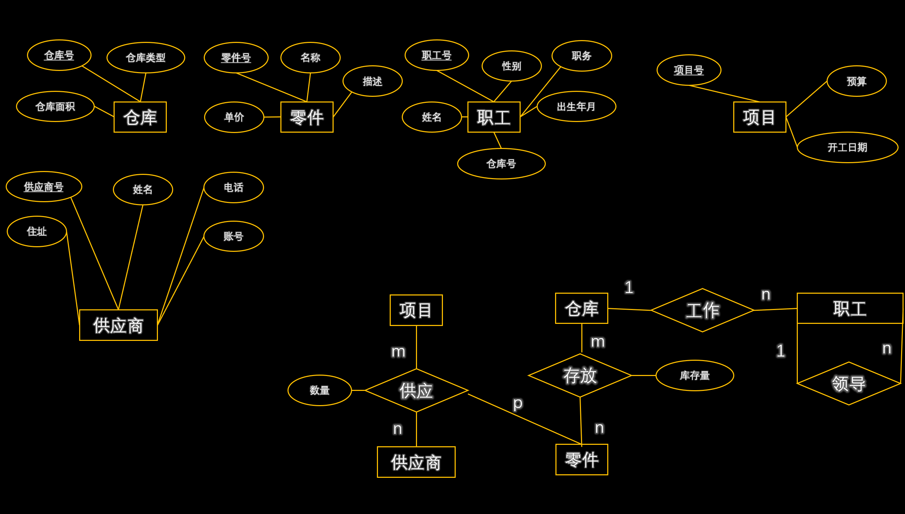
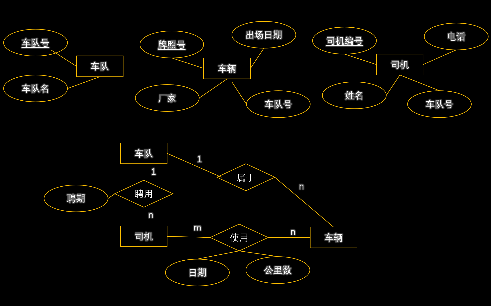

什么是两段封锁协议？请写出两段封锁协议的内容。
| 规则 | 内容 | 表达式 |
|---|---|---|
| A1(自反性) | 如果 Y ⊆ X ⊆ U | 则 X → Y |
| A2(增广性) | 如果 X → Y 且 Z ⊆ U | 则 XZ → YZ |
| A3(传递性) | 如果 X → Y 且 Y → Z | 则 X → Z |
| B1(合并性) | 如果 X → Y 且 X → Z | 则 X → YZ |
| B2(分解性) | 如果 X → YZ | 则 X → Y、X → Z |
| B3(结合性) | 如果 X → Y 且 W → Z | 则 XW → YZ |
| B4(伪传递性) | 如果 X → Y 且 WY → Z | 则 XW → Z |
设有关系模式 R，属性集 U = {A,B,C,X,Y}，函数依赖集 F={Z→A, B→X, AX→Y, ZB→Y}，试证明 ZB→Y 可由 F 导出。
1. 因为 Z→A，B→X，由 B3 可知，ZB→AX
2. 因为 ZB→AX，AX→Y，由 A3 可知，ZB→Y
即 ZB→Y 可由 F 中其他函数依赖导出，所以 ZB→Y 是冗余的函数依赖。
什么是最小函数依赖集？请写出最小函数依赖集需要满足的条件。
如果函数依赖集 F 满足下列条件，则称 F 为一个最小函数依赖集：
显然，每个函数依赖集至少存在一个最小依赖集，但并不一定唯一。
设 F 是关系模式 R(A,B,C) 的函数依赖集，F={A→BC, B→C, A→B, AB→C}，试求最小函数依赖集。
1. 先把 F 写成右边单属性形式：F={A→B, A→C, B→C, A→B, AB→C}，删除一个 A→B，得 F={A→B, A→C, B→C, AB→C}
2. A→C 可从 A→B 和 B→C 推出，冗余，删去，得 F={A→B, B→C, AB→C}
3. AB→C 中，因为有 B→C，A 多余，删去，得 F={A→B, B→C}
什么是数据库的三级模式？什么是数据库的两级映射？数据独立性包括哪两种？分别通过什么映射实现？
物理独立性：应用程序与存储在磁盘上的数据库中的数据是独立的。通过模式/内模式映射实现。
逻辑独立性：用户的应用程序与逻辑结构是相互独立的。通过外模式/模式映射实现。
数据库并发执行会出现哪些问题？请分别说明。
| 问题 | 说明 |
|---|---|
| 丢失更新 | 两个事务同时修改同一数据，后提交的事务覆盖了先提交的事务的修改 |
| 不可重复读 | 同一事务内多次读取同一数据，结果不一致（被其他事务修改） |
| 读脏数据 | 读取了其他事务未提交的数据，随后该事务回滚 |
为什么数据库系统采用"先写日志后写数据库"的策略？请说明原因。
| 列名 | 数据类型 | 允许为空 | 特殊限制 |
|---|---|---|---|
| Sno | char(8) | 不允许 | 主键 |
| Sname | char(8) | 不允许 | |
| Sex | char(2) | 允许 | 取"男"或"女" |
| Dept | varchar(50) | 允许 | |
| Age | int | 不允许 |
| 列名 | 数据类型 | 允许为空 | 特殊限制 |
|---|---|---|---|
| Cno | char(3) | 不允许 | 主键 |
| Cname | varchar(20) | 允许 | |
| Ccredit | int | 不允许 |
| 列名 | 数据类型 | 允许为空 | 特殊限制 |
|---|---|---|---|
| Sno | char(8) | 不允许 | 组合主键，外键 → S(Sno) |
| Cno | char(3) | 不允许 | 组合主键，外键 → C(Cno) |
| Grade | int | 允许 | 取值范围 0~100 |
1. 查询课号为 '01' 的课程信息。
2. 查询学分为 3 的课程号和课程名（写出 SQL 语句和关系代数表达式）。
SELECT * FROM C WHERE Cno = '01';SELECT Cno, Cname FROM C WHERE Ccredit = 3;查询选修了 '02' 课程的学生的学号和姓名。
SELECT S.Sno AS 学号, S.Sname AS 姓名
FROM S, SC
WHERE S.Sno = SC.Sno AND SC.Cno = '02';查询平均分大于 70 分的课程课号、选课人数和平均分。
SELECT Cno AS 课号, COUNT(*) AS 选课人数, AVG(Grade) AS 平均分
FROM SC
WHERE Grade > 70
GROUP BY Cno;将选修课程号为 '02' 的所有学生的分数加 5 分。
UPDATE SC
SET Grade = Grade + 5
WHERE Cno = '02';创建一个存储过程，输入课号、课程名字、学分，增加一条课程数据。并写出调用语句。
DELIMITER //
CREATE PROCEDURE InsertCourse(
IN p_Cno CHAR(3),
IN p_Cname VARCHAR(20),
IN p_Ccredit INT
)
BEGIN
INSERT INTO C VALUES(p_Cno, p_Cname, p_Ccredit);
END //
DELIMITER ;
-- 调用存储过程
CALL InsertCourse('04', '数据管理', 4);创建视图，显示每科最高分的学生信息（学号、姓名、成绩）。
CREATE VIEW v_max_grade AS
SELECT SC.Cno, S.Sno AS 学号, S.Sname AS 姓名, SC.Grade AS 成绩
FROM S, SC
WHERE S.Sno = SC.Sno
AND SC.Grade = (
SELECT MAX(Grade)
FROM SC AS SC2
WHERE SC2.Cno = SC.Cno
);在 S 表中增加一列 School（学校），默认值为 '燕京理工学院'。
ALTER TABLE S
ADD School VARCHAR(50) DEFAULT '燕京理工学院';把 S 表的查询权限授权给 root 用户。
GRANT SELECT ON S TO 'root'@'localhost';| 运算 | 符号 | 说明 |
|---|---|---|
| 选择 | σ | 按条件筛选行 |
| 投影 | π | 选择列 |
| 并 | ∪ | 合并两个关系 |
| 交 | ∩ | 取交集 |
| 差 | - | 取差集 |
| 笛卡尔积 | × | 两表所有组合 |
| 自然连接 | ⋈ | 按相同属性连接 |
| θ 连接 | ⋈θ | 按条件连接 |
| 除 | ÷ | 包含全部 |
| 重命名 | ρ | 修改关系名 |
查询选修了张三选修的所有课程的学生学号。
查询 C 语言课程成绩不及格的学生的学号和姓名。
设有关系模式 R(运动员编号, 比赛项目, 成绩, 比赛类别, 比赛主管)，用于存储运动员比赛成绩及比赛类别、主管等信息。
语义规定：每个运动员每参加一个比赛项目只有一个成绩；每个比赛项目只属于一个比赛类别；每个比赛类别只有一个比赛主管。
试回答下列问题：
1. 根据上述规定，写出模式 R 的基本函数依赖集和候选键。
2. 说明 R 不是 2NF 的理由，并把 R 分解成 2NF 模式集。
3. 进而分解成 3NF 模式集。
现有关系：医疗(病人编号, 病人姓名, 病人性别, 病人年龄, 医生编号, 医生姓名, 医生职称, 诊断日期, 诊断结果)
将"医疗"关系分解为 3NF（写明分解后每一个关系模式及其函数依赖集、主键、外键）。
| 关系模式 | 函数依赖 | 主键 | 外键 |
|---|---|---|---|
| 病人(病人编号, 病人姓名, 病人性别, 病人年龄) | 病人编号 → (病人姓名, 病人性别, 病人年龄) | 病人编号 | |
| 医生(医生编号, 医生姓名, 医生职称) | 医生编号 → (医生姓名, 医生职称) | 医生编号 | |
| 医疗(病人编号, 医生编号, 诊断日期, 诊断结果) | (病人编号, 医生编号, 诊断日期) → 诊断结果 | (病人编号, 医生编号, 诊断日期) | 病人编号 → 病人，医生编号 → 医生 |
以下是某数据库系统与数据库设计相关的语义，请根据语义进行概念结构设计，画出 E-R 图，并写出转换的关系模式（标注主键、外键）。
1. 一个仓库可以存放多个零件，一种零件可以存放在多个仓库中，存储产生库存量的属性；仓库有仓库号、仓库类型和面积，零件有零件号、名称、单价、描述等属性。
2. 一个职工只能在一个仓库工作，一个仓库有多个职工当保管员；职工有职工号、姓名、性别、职务、出生年月属性。
3. 职工之间有领导与被领导关系，仓库主任领导若干保管员。
4.
一个供应商可以供应若干项目多种零件；而一个项目可以使用不同供应商供应的多种零件；一种零件可由不同供应商供给多个工程项目，供应产生数量的属性。供应商有供应商号、姓名、住址、电话、账号，项目有项目号、预算、开工日期等属性。

| 关系模式 | 主键 | 外键 |
|---|---|---|
| 仓库(仓库号, 仓库类型, 仓库面积) | 仓库号 | |
| 零件(零件号, 名称, 单价, 描述) | 零件号 | |
| 职工(职工号, 姓名, 性别, 职务, 出生年月, 仓库号, 领导职工号) | 职工号 | 仓库号 → 仓库，领导职工号 → 职工 |
| 项目(项目号, 预算, 开工日期) | 项目号 | |
| 供应商(供应商号, 姓名, 住址, 电话, 账号) | 供应商号 | |
| 存放(仓库号, 零件号, 库存量) | (仓库号, 零件号) | 仓库号 → 仓库，零件号 → 零件 |
| 供应(项目号, 供应商号, 零件号, 数量) | (项目号, 供应商号, 零件号) | 项目号 → 项目，供应商号 → 供应商，零件号 → 零件 |
某汽运公司有若干车队，每个车队有若干车辆和司机，为了提升效率，需要开发一个车辆管理系统。请根据下述需求描述完成该系统的数据库设计。
1. 记录车队的信息，包括车队号、车队名。记录车辆的信息，包括牌照号、厂家、出厂日期。
2. 记录司机的信息，包括司机编号、姓名、电话。
3.
车队和司机有"聘用"联系，每个车队可以聘用若干司机，但每个司机只能应聘于一个车队，车队聘用司机有聘期；每个车队可以有若干车辆，但每辆车只能属于一个车队；每个司机可以使用多辆汽车，每辆汽车可以被多个司机使用，司机使用车辆有使用日期和公里数。
要求：画出 E-R 图，写出转换的关系模式并标注每个关系模式的主键、外键。

| 关系模式 | 主键 | 外键 |
|---|---|---|
| 车队(车队号, 车队名) | 车队号 | |
| 车辆(牌照号, 厂家, 出厂日期, 车队号) | 牌照号 | 车队号 → 车队 |
| 司机(司机编号, 姓名, 电话, 车队号, 聘期) | 司机编号 | 车队号 → 车队 |
| 使用(牌照号, 司机编号, 日期, 公里数) | (牌照号, 司机编号, 日期) | 牌照号 → 车辆，司机编号 → 司机 |
写出 ALTER TABLE 语句的常见用法（添加列、修改列、删除列、添加约束、删除约束、修改表名），并给出基于 S、SC、C 表的示例。
-- 在 S 表中添加 Phone 列
ALTER TABLE S ADD Phone CHAR(11);
-- 在 SC 表中添加 ExamDate 列
ALTER TABLE SC ADD ExamDate DATE DEFAULT CURDATE();
-- 在 C 表中添加 Semester 列，放在 Ccredit 列之后
ALTER TABLE C ADD Semester INT AFTER Ccredit;-- 修改 S 表中 Sname 的长度为 20
ALTER TABLE S MODIFY Sname VARCHAR(20);
-- 修改列名（将 Sex 改为 Gender）
ALTER TABLE S CHANGE Sex Gender CHAR(2);ALTER TABLE S DROP COLUMN Phone;
ALTER TABLE SC DROP COLUMN ExamDate;-- 添加 CHECK 约束
ALTER TABLE S ADD CONSTRAINT chk_age CHECK (Age BETWEEN 15 AND 50);
-- 删除约束
ALTER TABLE S DROP CONSTRAINT chk_age;ALTER TABLE S RENAME TO Student;写出 DROP 语句删除各种数据库对象的语法（表、数据库、视图、索引、存储过程），并说明注意事项。
-- 删除表
DROP TABLE SC;
DROP TABLE IF EXISTS S;
-- 删除数据库
DROP DATABASE school;
-- 删除视图
DROP VIEW v_max_grade;
-- 删除索引
DROP INDEX idx_sname ON S;
-- 删除存储过程
DROP PROCEDURE InsertCourse;写出 DELETE 语句的各种用法（条件删除、清空数据、多表关联删除、带 LIMIT 删除），并给出基于 S、SC、C 表的示例。
DELETE 保留表结构，可配合 WHERE 条件删除指定数据。
-- 删除指定条件的数据
DELETE FROM S WHERE Dept = '数学系';
DELETE FROM SC WHERE Cno = '01';
-- 清空所有数据（保留表结构）
DELETE FROM SC;
-- 多表关联删除
DELETE SC FROM SC, S
WHERE SC.Sno = S.Sno AND S.Sname = '张三';
-- 带 LIMIT 的删除
DELETE FROM SC ORDER BY Grade ASC LIMIT 10;比较 TRUNCATE 和 DELETE 的区别（从语法、WHERE 条件、执行速度、回滚、触发器、自增计数器、外键约束等方面）。
| 特性 | DELETE | TRUNCATE |
|---|---|---|
| 语法 | DELETE FROM 表名 | TRUNCATE TABLE 表名 |
| WHERE 条件 | 支持 | 不支持 |
| 执行速度 | 较慢（逐行删除） | 较快（直接删数据页） |
| 回滚 | 支持 ROLLBACK | 不支持（自动提交） |
| 触发器 | 会触发 | 不会触发 |
| 自增计数器 | 不变 | 重置为初始值 |
| 外键约束 | 受限制 | 有外键时不能执行 |
| 知识点 | 说明 |
|---|---|
| 数据库物理结构设计与具体的 DBMS 系统有关 | 不同的 DBMS（MySQL、Oracle、SQL Server）物理存储方式不同 |
| 规范化过程 | 投影分解为两个及两个以上的关系模式 |
| 概念结构设计步骤 | 抽象 → 设计局部视图 → 合并取消冲突 → 修改重构消除冗余 |
| 静态副本恢复 | 数据处于一致性状态 |
| 存储过程 | 可以调用多次，提高代码复用性 |
| 视图 | 虚拟数据表，操作与实体表基本一致，但视图不属于模式 |
| 视图 vs 存储过程 | 视图是查询结果的虚拟表；存储过程是预编译的 SQL 语句集合 |
| 数据备份 — 海量存储 | 每次复制整个数据库 |
| 数据备份 — 增量存储 | 每次只存上次存储后被更新过的数据 |
| 数据备份 — 静态存储 | 在系统无法运行事务时进行的存储操作 |
| 数据备份 — 动态存储 | 转储期间允许数据库进行存取或修改的转储 |
| 事务 ACID — 原子性(Atomicity) | 要么全做，要么不做 |
| 事务 ACID — 一致性(Consistency) | 转账 A,B 总额不变 |
| 事务 ACID — 隔离性(Isolation) | 数据库允许多个并发事务同时对其中的数据进行读/写和修改 |
| 事务 ACID — 持久性(Durability) | I/O 磁盘永久化，故障后数据不会丢失 |
| 实体完整性规则 | 主键唯一且不为空 |
| 参照完整性约束 | 参照完整性给出正确联系的约束条件 |
| 用户定义完整性 | 根据环境要求，加入特殊限制 |
MySQL 知识点整理